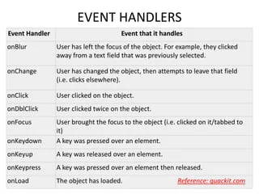

What is JavaScript Output method?
Ans: In JavaScript, there isn't a single, unified "output method" because JavaScript primarily runs on the client-side (user's web browser) and interacts with the Document Object Model (DOM) to manipulate the webpage content. Here are the common ways to display information or results generated by your JavaScript code
- innerHTML
- innerText/textContent
- window.alert()
How to used JavaScript Output method?
Ans: 1: inner.html-This property allows you to dynamically set or retrieve the HTML content within an element. It's powerful for creating or updating content based on JavaScript logic or user interaction.
2: innerText/textContent- These properties get or set the textual content of an element. While innerText considers only visible text, textContent includes all text content, even hidden elements.
3: window.alert()- This method creates a modal dialog that displays the message you provide. It's suitable for critical information or debugging, but use it cautiously as it can disrupt the user experience.
4: console.log()- This method writes a message to the browser's developer console, primarily used for debugging. It's invaluable for inspecting variables, tracking program flow, and viewing errors. The console isn't visible to users by default.
5:document.write()- Generally discouraged for modern development, this method can overwrite existing content and cause unexpected behavior. Use it only in specific scenarios or legacy code.
6:window.print()- This method opens the browser's print dialog, allowing the user to print the current webpage content. It's not for displaying JavaScript output but user interaction with printing the page.
How to used JavaScript Events to do all examples?
Ans:1: Events- An event is an action or occurrence that triggers a response within a web page. This could be a user interaction (like clicking a button) or a browser action (like the page loading).
2: Event Handlers- When an event happens, JavaScript code called an event handler is executed. This code defines how the page should react to the event.
types of events

What is React Js?
AnsReact.js (or simply React) is a free and open-source JavaScript library created by Meta (formerly Facebook) for building user interfaces (UIs) specifically for web applications. It's become a very popular choice for front-end development due to its component-based approach and performance optimizations.
core concepts:-
- 1: Components- React applications are built using reusable components. These components are like Lego bricks for your UI, encapsulating both HTML structure and JavaScript logic. You can create components for anything from a simple button to a complex navigation bar
- 2:JSX (JavaScript XML)- React uses JSX, a syntax extension for JavaScript that allows you to write HTML-like structures within your code. This makes it easier to visualize and reason about your UI. However, JSX is transformed into regular JavaScript code before the browser runs it.
- : Virtual DOM- React employs a virtual DOM, which is an in-memory representation of the actual DOM (Document Object Model) of the web page. When changes occur in your application's state (data), React efficiently calculates the minimal differences between the real and virtual DOMs and updates only the necessary parts of the real DOM. This significantly improves performance compared to traditional DOM manipulation.
What is NPM in React Js?
Ans:In React.js development, NPM (Node Package Manager) plays a crucial role in managing external libraries and dependencies. Here's how NPM integrates with React:
NPM: The Essential Package Manager
Installation and Management: NPM comes bundled with Node.js, which is a JavaScript runtime environment required to run React applications. NPM allows you to install, update, and remove various JavaScript packages that provide functionalities beyond what React itself offers. These packages can include UI component libraries (like Material-UI or Bootstrap), routing libraries (like React Router), state management solutions (like Redux), testing frameworks (like Jest), and many more.
What is Role of Node Js in react Js?
Ans:React.js and Node.js are two powerful JavaScript technologies that often work together to create web applications. However, they serve distinct purposes:
- React.js (for the Front-end):
- Focus: User Interface (UI).
- What it Does: React.js is a JavaScript library for building dynamic and interactive user interfaces. It excels at creating reusable components that can be combined to form complex UIs
- Node.js (for the Back-end)
- Focus: Server-side functionality.
- What it Does: Node.js is a JavaScript runtime environment that allows you to run JavaScript code outside of the browser, on a server. It's well-suited for building web servers, APIs (Application Programming Interfaces), and other back-end applications
What is CLI command In React Js
Ans:React itself doesn't have a vast set of built-in CLI (Command Line Interface) commands. However, there are several ways to interact with React projects using the command
- Create React App (CRA):
- This popular tool provides a convenient way to set up new React projects using a command-line utility. You can install it globally using npm: npm install -g create-react-app
- Then, create a new React project with a simple structure and default dependencies: create-react-app my-react-app
- CRA offers various commands for managing your project, such as:
- npm start (or yarn start): Starts the development server.
- npm test (or yarn test): Runs unit tests.
- npm build (or yarn build): Creates an optimized production build
- Other Development Tools:
- Many popular development tools used with React projects have their own CLI commands. For example, state management libraries like Redux or testing frameworks like Jest provide commands for managing state, running tests, and generating code.
- Custom CLI Tools:
- You can also create your own custom CLI tools using Node.js packages like commander or yargs. These tools allow you to define commands specific to your project's needs, such as tasks for scaffolding components, deploying your application, or automating other workflows.
What is Components in React Js?
Ans:Components are the fundamental building blocks of React applications. They are reusable pieces of code that encapsulate both UI (user interface) and logic. Here's a breakdown of what components are and how they work in React:
- components and stracture-
- Independent and Reusable: Each component is self-contained and can be used multiple times throughout your application. This promotes code reusability, reduces redundancy, and makes your codebase more maintainable.
- JSX and Functionality: Components are typically written using JSX (JavaScript XML), a syntax extension that allows you to write HTML-like structures within your JavaScript code. However, components can also be written in pure JavaScript.
- Returning JSX: A component must return JSX that defines the UI elements it renders. This JSX can include HTML elements, other components, or a combination of both.
- types of components-
- class Components:
- Defined using the React.Component class.
- Have a lifecycle (methods like render, componentDidMount, etc.) that allows for more complex behavior and state management.
- While still functional, functional components and hooks are the preferred approach for most cases in modern React development
- functional Components (less common now):
- Defined as simple JavaScript functions that accept props (properties) as input and return JSX describing what the component should render.
- Considered a simpler and more modern approach, especially for smaller or stateless components.
What is Header and Content Components in React Js?
Ans:In React.js, header and content components are specific examples of how you can leverage the power of reusable components to structure your application's UI.
- header component
- Purpose: The header component typically represents the top section of your application's layout. It often contains elements like:
- branding
- navigation
- serch bar
- User profile information (if applicable)
- Benefits: By creating a separate header component, you gain:
- Reusability: You can use the same header component across different pages in your application.
- Maintainability: Keeping header logic centralized makes updates easier.
- Flexibility: You can easily customize the header's appearance and content for different sections of your app.
- content component
- Purpose: The content component represents the main area of your application's UI where the primary content is displayed. This can vary depending on the page:
- A product listing on an e-commerce site.
- A blog post on a news website.
- A form for user input.
- Benefits: Having a dedicated content component offers
- Clear Separation: It separates the layout (header) from the dynamic content.
- Manageability: Content updates become more focused.
- Flexibility: You can design different content components for various sections.
How to check version of React Js?
Ans:There are three main ways to check the version of React your project is using:
- 1-Using the package.json file
- The package.json file contains metadata about your project, including its dependencies. It's created by default when you set up a React project.
- Open the package.json file in your text editor.
- Look for the dependencies section. This section lists all the libraries your project depends on, and one of them should be react.
- The version of React will be listed next to the react entry, like this:
- Using the command line:
- If you have React installed globally on your system, you can use the react-dom command to check the version.
- Open your terminal and type the following command
- Using the React object in your code (development mode only
- In development mode, the default import from the React library (import React from 'react') is an object that has a version property.
- You can use this property to check the version of React within your code, but this method only works in development mode and shouldn't be used in production code.